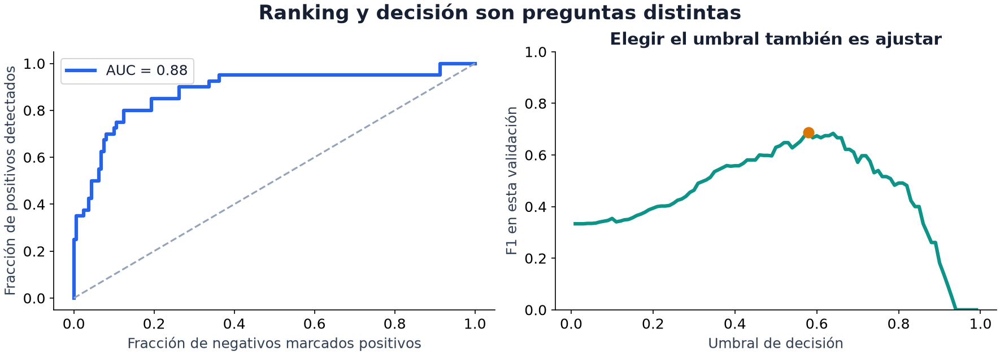

04 · Métricas
Nivel 1 — El piso · Ruta de Aprendizaje
Un detector puede acertar casi siempre porque casi nunca ocurre lo que busca. Otro puede encontrar todos los casos importantes, pero producir muchas falsas alarmas. Una métrica elige qué aspecto de esas predicciones resumir. Antes de interpretar el número, necesitamos saber qué errores cuenta y cómo los pesa.
Cuatro tipos de resultado
Llamamos positiva a la clase que queremos detectar, aquí codificada como 1. Positivo no significa «bueno»: podría ser una avería. La clase 0 es negativa. Supón cien ejemplos, de los cuales veinte tienen una avería:
| Predice avería | Predice sin avería | Total real | |
|---|---|---|---|
| Tiene avería | 8 verdaderos positivos (VP) | 12 falsos negativos (FN) | 20 |
| No tiene avería | 2 falsos positivos (FP) | 78 verdaderos negativos (VN) | 80 |
Esta matriz de confusión distingue aciertos de los dos tipos de error. Sus cuatro casillas dan varias respuestas:
| Métrica | Cuenta | En el ejemplo |
|---|---|---|
| Accuracy | (VP + VN) / total: fracción de aciertos | 86/100 = 0.86 |
| Precision | VP / (VP + FP): fracción de alertas que eran ciertas | 8/10 = 0.80 |
| Recall | VP / (VP + FN): fracción de averías encontradas | 8/20 = 0.40 |
| F1 | 2×VP / (2×VP + FP + FN) | 16/30 ≈ 0.533 |
El detector acierta el 86% de las filas, pero pierde el 60% de las averías.
Precision y recall cambian el denominador: «dentro de mis alertas» frente a
«dentro de las averías reales». F1 es su media armónica,
2×precision×recall/(precision+recall) cuando el denominador no es cero.
Penaliza que una sea muy baja y no incorpora directamente los verdaderos negativos.
La receta Métricas de clasificación permite contrastar las cuentas.
Muchos aciertos pueden convivir con ningún positivo encontrado
import numpy as np
y = np.array([0] * 99 + [1])
pred = np.zeros(100, dtype=int)
print((pred == y).mean()) # 0.99 de accuracyAquí recall es cero: el único positivo no fue encontrado. El 0.99 describe correctamente la fracción de aciertos, pero no demuestra capacidad para detectar positivos. Compararlo con el Baseline trivial y mirar la matriz aclara lo que está ocurriendo. El balance de clases importa para interpretar la cifra; no vuelve falsa la definición de accuracy.
Si no hay alertas, precision tiene denominador cero. Nuestro ejemplo de código
usa la convención zero_division=0 de scikit-learn. Eso no transforma una razón
indefinida en una observación con significado: es una convención del evaluador
que debe coincidir con la de la tarea.
Del score a la decisión
Algunos clasificadores entregan un score: un número mayor indica más
evidencia de clase positiva. Algunos estiman probabilidades mediante
predict_proba; otros ofrecen valores sin interpretación probabilística.
Un umbral convierte el número en decisión: predecir 1 si score >= umbral.
Si conocieras la probabilidad real de clase 1 para ese ejemplo y ambos errores costaran igual, elegir la clase más probable minimizaría el error esperado. De ahí viene el umbral 0.5. No exige clases balanceadas. Con probabilidades aproximadas, costes distintos u objetivos como F1, otro umbral puede ser útil; no es una mejora garantizada por moverlo.
Además, estimar 0.8 no demuestra que el modelo esté bien calibrado. Una predicción calibrada significa que, entre muchos ejemplos con estimaciones cercanas a 0.8, alrededor del 80% pertenece a la clase positiva. La calibración se comprueba en datos nuevos; no basta con que la salida esté entre cero y uno. Calibración en scikit-learn.
Este pequeño conjunto permite separar ranking y decisión sin entrenar un modelo:
from sklearn.metrics import accuracy_score, precision_score, recall_score, f1_score
etiquetas = np.array([0, 1, 0, 1])
scores = np.array([0.10, 0.40, 0.45, 0.90])
for umbral in [0.5, 0.3]:
decisiones = scores >= umbral
print(umbral, decisiones.astype(int),
"accuracy:", accuracy_score(etiquetas, decisiones),
"precision:", precision_score(etiquetas, decisiones, zero_division=0),
"recall:", recall_score(etiquetas, decisiones, zero_division=0),
"F1:", f1_score(etiquetas, decisiones, zero_division=0))Con 0.5 encontramos uno de los dos positivos sin falsas alarmas: F1 es 2/3. Con 0.3 encontramos ambos, a costa de una falsa alarma: F1 es 0.8. Accuracy sigue en 0.75. Las predicciones numéricas no cambiaron; cambió lo que decidimos hacer con ellas. La receta Umbral óptimo busca cortes para un criterio dado.
Elegir el umbral utiliza etiquetas, igual que elegir otro parámetro de una propuesta. Por eso se elige con validación y se observa después en una muestra reservada. Repetir la selección mirando el test lo convertiría en otra validación. Umbrales de decisión en scikit-learn.
ROC y AUC: observar el ranking completo

La curva ROC recorre dos tasas al variar el umbral: falsos positivos,
FP/(FP+VN), y recall, VP/(VP+FN). Un punto arriba y a la izquierda detecta
muchos positivos con pocas falsas alarmas. Cada punto corresponde a una regla
de decisión; la curva reúne esas posibilidades.
ROC-AUC, el área bajo la curva, evalúa el orden. Equivale a la probabilidad de que un positivo elegido al azar tenga score mayor que un negativo, con medio crédito para empates. En nuestros cuatro ejemplos hay cuatro parejas positivo-negativo; tres están bien ordenadas, por lo que AUC es 0.75:
from sklearn.metrics import roc_auc_score
print(roc_auc_score(etiquetas, scores)) # 0.75
print(roc_auc_score(etiquetas, scores ** 3)) # 0.75: conserva el ordenLa figura corresponde a un conjunto mayor del material, no a esos cuatro puntos. Muestra por qué puedes cambiar F1 sin cambiar AUC ni reentrenar. Una transformación estrictamente creciente conserva el ranking; para conservar además las decisiones, hay que transformar también el umbral.
Con una sola clase, AUC no está definida: no existen parejas de ambos tipos. Y una AUC alta no dice cuántas alertas serán falsas en una población con muy pocos positivos. Precision y recall ayudan a examinar esa otra pregunta.
Cuando predecimos cantidades: MAE y MSE
En regresión, la respuesta es una cantidad, como duración o conteo. MAE promedia errores absolutos; MSE promedia errores al cuadrado. En ambos, menor es mejor. Elevar al cuadrado da mucho más peso a errores grandes.
Supón que solo pudieras predecir una constante para respuestas [0,0,9]:
| Constante | Errores absolutos | MAE | MSE |
|---|---|---|---|
| 0, la mediana | 0, 0, 9 | 3 | 27 |
| 3, la media | 3, 3, 6 | 4 | 18 |
La mediana minimiza la suma de distancias absolutas; la media minimiza la de cuadrados. Es una propiedad de la mejor predicción constante para esos datos, no una promesa sobre cualquier modelo. Para construir un baseline sin mirar validación, calculamos esa constante con las respuestas de entrenamiento.
valores = np.array([0., 0., 9.])
for nombre, constante in [("mediana", np.median(valores)), ("media", valores.mean())]:
errores = valores - constante
print(nombre, "MAE:", np.abs(errores).mean(), "MSE:", (errores ** 2).mean())Promediar también elige qué pesa más
Si un grupo aporta nueve ejemplos y otro uno, la accuracy global pesa nueve
veces más al primero. Acertar los nueve y fallar el último da 0.90. Promediar
las accuracy de ambos grupos con el mismo peso da (1+0)/2 = 0.50.
Robot Chasing usa una media por robot para que sus seis robots pesen igual.
Eso exige calcular la métrica por robot, pero no obliga a dejar robots enteros fuera de entrenamiento. La unidad que separas depende del uso futuro: robots conocidos con nuevos tableros es una pregunta; robots nunca vistos es otra. El módulo 05 distingue esa decisión del promedio usado para puntuar.
Lo que una métrica oficial permite deducir
| Tarea | Qué cuenta | Qué sugiere investigar |
|---|---|---|
| Radar (2025) | Acierto ponderado por píxel: peso 50 en objetivos y 1 en fondo | Un error de omisión de objetivo pesa más por píxel, pero las falsas alarmas también cuentan |
| Ghost of the Machine (2026) | Promedio de exp(−error_absoluto/100), expresado sobre 100 | Acercarse a la posición correcta da crédito parcial; no exige una única arquitectura o formulación |
| Potato (2026) | Si resuelve en hasta 30 turnos: 1−0.02×max(0,turno−10); si falla, 0 | Resolver pronto ayuda, pero también importa la probabilidad de resolver |
La métrica orienta, no revela sola la solución. En Radar, el valor de predecir «todo fondo» depende de cuántos píxeles de cada clase haya; el peso 50 no basta para calcularlo. En Ghost, un error de 100 caracteres aporta aproximadamente 36.8 sobre 100 para esa muestra. En Potato, resolver en diez turnos recibe el mismo score que resolver en uno, aunque ambos consuman distinto tiempo. Puedes usar otras métricas como diagnóstico, conservando la oficial para comparar lo que realmente se evaluará.
Un experimento para mirar
El cuaderno 03 · Métricas y umbral de Laboratorios guiados dibuja ROC junto a F1. Mueve el umbral y observa qué errores intercambias. Luego cambia la prevalencia de positivos en el conjunto observado: ¿qué ocurre con el valor práctico de una alerta? ¿Podrían dos propuestas tener igual accuracy y muy diferente recall, como en el ejemplo pequeño?
Ya sabemos qué cuenta la métrica. Falta decidir sobre qué ejemplos medirla para que responda a la situación que nos interesa; ese es el problema de validación.
← 03 - La competencia y la estrategia · Ruta de Aprendizaje · 05 - Validación honesta →